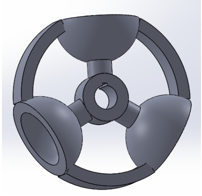

Hands-on engineering work: what the problem was, how I solved it, and what it produced.
The problem: chilled water supply to a process line was controlled by manual valve operation, causing temperature fluctuations and constant operator attention.
What I did: designed and built an automated control system using an Autonics TC4W temperature controller actuating a relay and solenoid valve — automatically opening or closing the chilled water line when process temperature crossed the setpoint. Separately, for a stepper-motor-driven peristaltic filling pump whose driver lacked a suitable control signal, I designed an LM555-based astable multivibrator circuit (resistors, potentiometer, capacitors, transistor) generating a stable 3 kHz pulse to drive the motor.
Result: replaced manual valve operation, reduced temperature fluctuations, and got the filling pump running with a purpose-built control circuit.
Skills: PID control, HVAC, process automation, instrumentation, control systems, circuit design
Three 2D drawings completed to keep my drafting skills current alongside my Ph.D. research:
Skills: orthographic and sectional views, assembly drawings, dimensioning, hatching, layer management, blocks, title-block preparation
The problem: reading air properties off a paper psychrometric chart is slow and error-prone for repeated HVAC calculations.
What I did: developed a MATLAB program that computes all psychrometric air properties from a given dry-bulb and wet-bulb temperature, and automatically determines what environmental change is needed to bring conditions into the comfort or required zone.
Skills: MATLAB, psychrometrics, HVAC analysis, thermodynamics
Designed and fabricated a machine for effortless lime juice extraction using a rotating squeezing mechanism. Rotating parts were designed in SolidWorks and manufactured by molding and aluminium casting in the BUET foundry lab, followed by functional testing of the working prototype.

Skills: SolidWorks, mechanical design, manufacturing, casting, prototyping